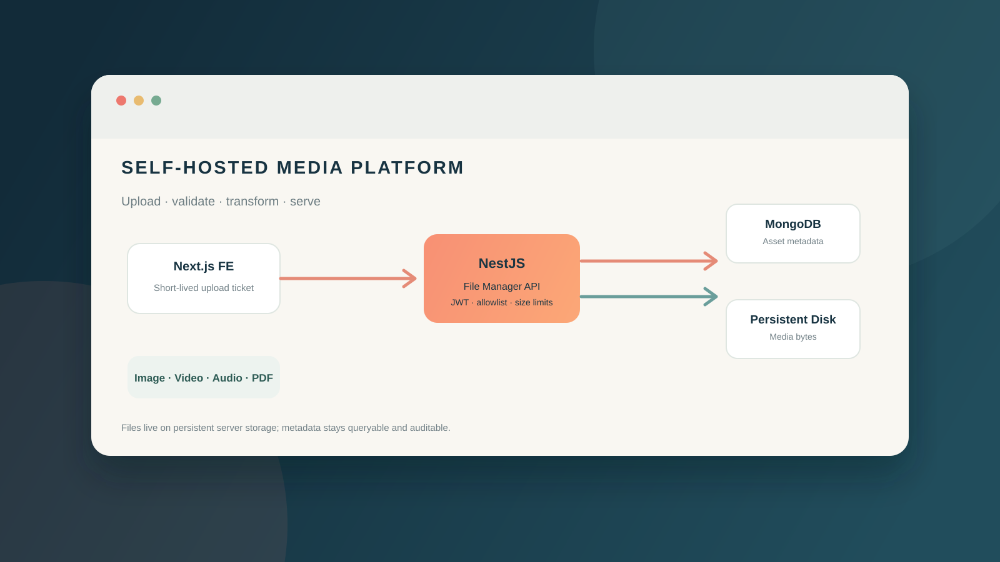
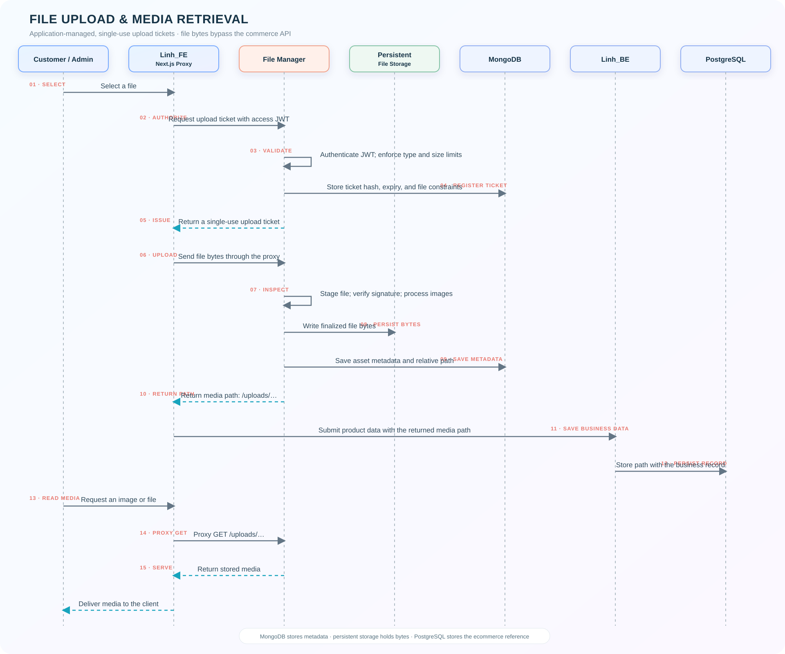

IMAGE Optimize for delivery
JPEG, PNG, WebP, and GIF are allowlisted and signature checked. Still images are converted to WebP with thumbnail variants; animated GIFs retain their original animation.
A dedicated service for authorizing, validating, processing, organizing, and serving application files on infrastructure I control.

The file service owns upload authorization, file validation, image processing, media metadata, and delivery. The commerce API stores the stable relative file path beside business data, so its endpoints stay focused on ecommerce rules instead of receiving large file bodies.
The authenticated frontend requests a short-lived, single-use upload ticket. This is an application-managed upload capability, not an S3 presigned URL.

JPEG, PNG, WebP, and GIF are allowlisted and signature checked. Still images are converted to WebP with thumbnail variants; animated GIFs retain their original animation.
MP4 and WebM are validated and stored without transcoding. Streaming renditions require a separate processing pipeline and deployment capacity.
Supported MP3, M4A, WAV, OGG, and WebM audio files are stored under generated filenames with validated MIME metadata.
PDF is supported. Executables, HTML, SVG, and unknown formats are rejected to reduce the risk of serving active content.
Stored on the media server disk outside temporary upload staging.
Type, size, hash, folder, timestamps, URLs, and soft-delete state.
Linh_BE stores a relative path with its product or other record.
Short-lived, one-use tickets. A random capability is bound to the user and upload constraints, stored by hash, expires quickly, and cannot authorize a second upload.
Validate file bytes. Request limits constrain resource use; signature checks and generated names avoid trusting browser MIME headers or user paths.
Keep staging private. In-progress uploads stay outside publicly served media directories; only finalized assets receive media paths.
Make deployment assumptions explicit. Persistent storage, capacity monitoring, and tested backups are required. Multiple app instances need shared self-managed storage; container-local disk is not durable.
“I separated binary uploads from the commerce API. The frontend authenticates to request a short-lived, one-use upload capability, then sends the file to a dedicated NestJS service. That service validates file signatures, processes images with Sharp, persists the bytes, and records queryable metadata in MongoDB. The commerce backend stores only the stable media reference. The main production trade-off is owning durable storage, monitoring, and backups.”